LA-4 Demo Guide
A presenter's script for the Book of Business module, task by task from 4.1 to 4.20: what to open, what to say, what to click, and what each screen should show. Screenshots 01–25 are from the run of 4.1–4.10 on 7 October 2026; 26–37 are from the end-to-end run of the whole module on 8 October, with made-up commission data.
http://localhost:3000Before you start
Set up
- Sign in to the app as the demo agency owner (Book of Business pages) and, in the same browser, as staff (the
/adminpages for 4.3 and 4.5). - Turn on the test carrier LA14 Market. It is kept deactivated so no real agency sees it; it must be active for the upload and for its rows to show.
- The demo agency already has a layout map for LA14 Market, and the carrier already has three approved status words: Active, Lapsed, Pending UW. The sample files use only those.
- Have the three sample files ready (in
docs/la4/demo/sample-files/): September, the first October file, and the corrected October file.
Know this before a second run
- The demo agency already holds the data from the 7 and 8 October runs: three policy files, an Oct 8 file with the product, and an Oct 6 commission statement with its totals. Walk the screens; only the live upload is new.
- LA14 Market and the Lapse risk switch were left on after the 8 October run.
- Keep Carrier files filtered to LA14 Market: two test leftovers sit under Americo, one of them a spreadsheet with real client details.
- Policies, Commission ledger and Discrepancies each show one list with a Source filter: from carrier files, or entered (imported) by hand. The demo agency also holds older test data entered by hand, so set Source: From carrier files on those three, or open them with
?source=carrier(the links below do). Otherwise the figures include it: 128 policies, 152 ledger lines, $6,330 owed. - Links, rules, ledger lines and logged calls are permanent by design. Run the demo on the demo agency only.
Running order
Present the tasks in number order below, but run them in this order, because each step needs the data the one before it made.
- 4.1Carrier files, then Email and bucket
- 4.3 · 4.4Staff: Layout maps
- 4.5Staff: Status maps
- 4.10Import the September file
- 4.2The file in the registry
- 4.6Upload October, open Policy changes
- 4.17Add the carrier rule
- 4.1Upload the corrected October file
- 4.7Back to Import: who is at risk
- 4.8Links, then map an agent code
- 4.9Exceptions, then the contact directory
- LiveUpload the live-update file
- 4.11 · 4.20DEMO-1002, then follow its advance down
- 4.12 · 4.14Ledger, then Carrier accounts
- 4.13Rate card
- 4.15Discrepancies and a letter preview
- 4.16The call list and the save rate
- 4.18Book scorecards
- 4.19Runs and agent findings
On 8 October the first part was already loaded, so steps 1 to 11 are a walk through the screens rather than uploads.
Storage, file registry and the three doors
Say
Every file a carrier sends comes in through one of three doors: you upload it here, you email it to the agency's own address, or a script drops it into the agency's storage bucket.
Whatever the door, it lands in one registry. A file we can't read is still registered, as failed, with the reason, so nothing quietly disappears.
Email only works from senders you've approved, and each sender is tied to a carrier. The bucket uses a fixed folder layout, one code per carrier, and it's checked every five minutes.
Send the exact same file twice and the second one is skipped as a duplicate. Send a corrected file for the same day and it replaces the earlier one. The earlier one stays listed, marked Replaced.
Do
- Open Carrier files. At the start it is empty: No carrier file received yet.
- Open Email and bucket: the agency address, the approved-senders list, and the bucket folder with its carrier codes.
- Later in the run (step 8), upload the corrected October file and come back: three files, one marked Replaced, and the Replaced tile reads 1.
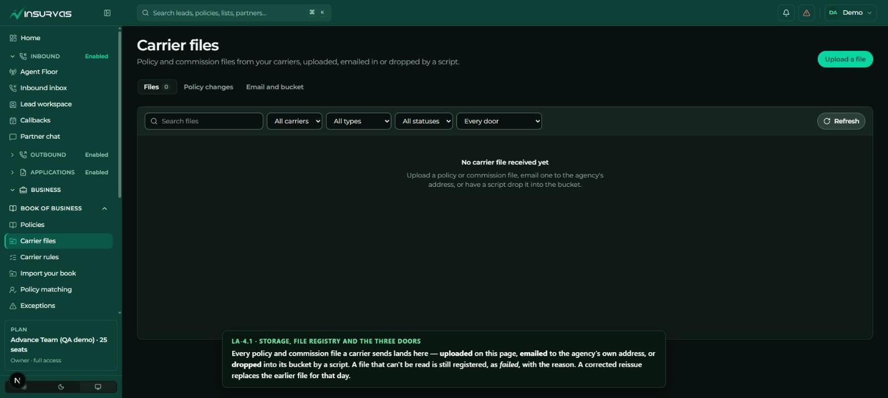
01 The registry before any file arrives.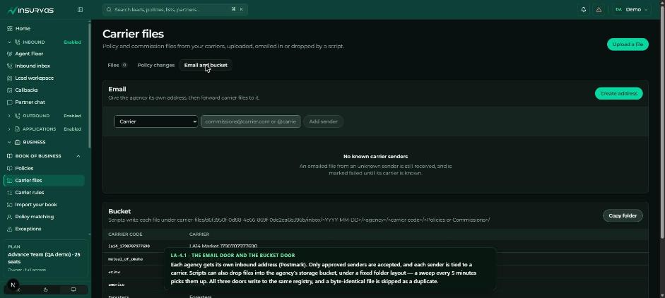
02 The email door and the bucket door.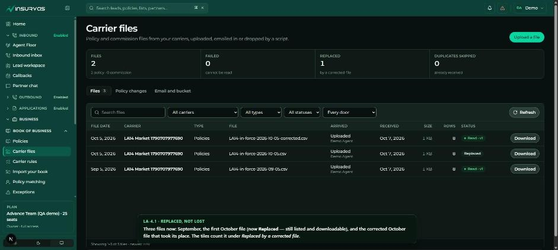
16 The corrected October file replaces the first one, which stays listed.The raw layer and reprocessing
Say
Every row of every file is kept exactly as the carrier sent it, and those rows are never edited.
That's what lets us fix things later. If a column map or a status word was wrong, we correct it and reprocess the file from its own rows. Nobody has to find the file and upload it again.
Each reprocess is recorded: what ran, on which files, and how many rows changed.
Do
- Point at the imported file: Sep 5, 2026 · 8 rows · Read · v1.
- Explain v1: the file was read with version 1 of its layout map, and it keeps that version even if the map changes later.
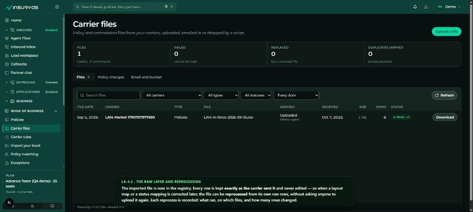
10 The imported file in the registry, read with map version 1.Spreadsheet parser and versioned layout maps
Say
Every carrier lays out its spreadsheet differently. A layout map says which column is the policy number, which is the status, the paid-to date, the premium, and so on.
Maps are versioned. A draft is reviewed, then published, and a file is always read with the version it was parsed under.
A platform map is shared by every agency that writes that carrier. An agency can also have its own. The demo uses an agency-level map for the test carrier.
This list is empty on purpose. Platform maps are written only from real carrier sample files, never guessed, and we're waiting on those files.
Do
- Show Layouts (empty) and Carrier assignments, where a published map is assigned to a carrier and file type.
- A file whose carrier has no published map waits; it is read automatically once one is published.
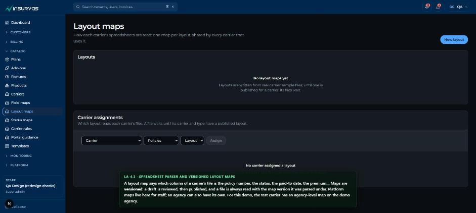
03 The platform library, empty until real carrier samples arrive.AI layout proposals
Say
When a carrier sends a layout we've never seen, an AI agent will propose a map, and a person approves it.
That step waits for an AI provider to be chosen. The decision was to build everything that doesn't need AI first. Until then, staff write the maps from real sample files.
Normalized status map and the unknown-status gate
Say
Carriers word their statuses their own way: IssNotPaid, Act-Ret Item, Pending UW. Each word is mapped, exactly as the carrier writes it, spaces and capitals included, to one of nine statuses we use.
A word nobody has mapped doesn't get guessed. Its rows are held back. Staff map it here, and the held rows are read automatically.
An approval is permanent and holds for that carrier word for every agency, so it's done once and done carefully.
Do
- Show Waiting to be mapped: each word, its carrier, how many rows it holds, how many agencies sent it.
- Show Status map: the test carrier's three approved words.
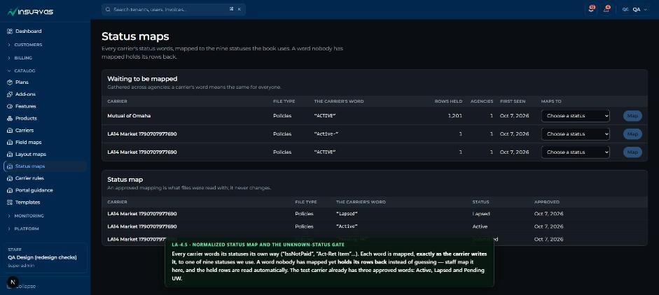
04 Words waiting to be mapped, and the approved map.Policy snapshots and the change-detection engine
Say
Each file becomes a snapshot of every policy on that date. Snapshots are never edited.
Comparing one snapshot with the next gives the policy's history, dated as precisely as the files allow: between the files of September 5 and October 5. We never pretend to know the exact day.
Importing a book makes no fake changes. A policy's first snapshot only records that we saw it.
If a late or corrected file arrives, only the policies it touches are recomputed.
Do
- Upload the October file for LA14 Market, dated 5 October, through the normal upload door.
- Show two files in the registry.
- Open Policy changes and read three rows aloud: the paid-to dates that moved, DEMO-1003 Active → Lapsed, and DEMO-1008 Submitted → Active (issued).
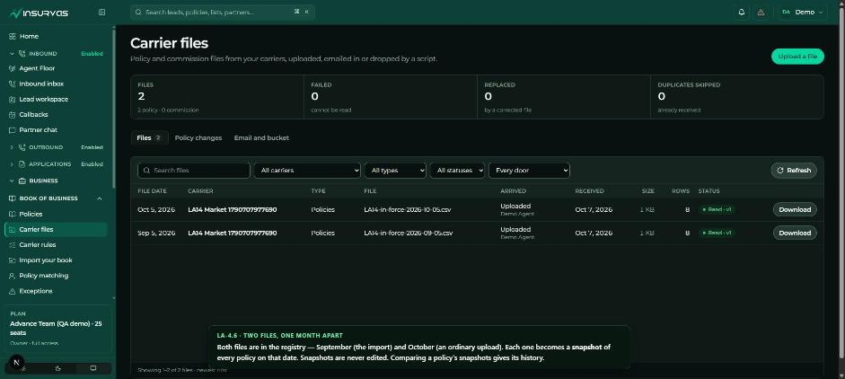
11 Two files, a month apart.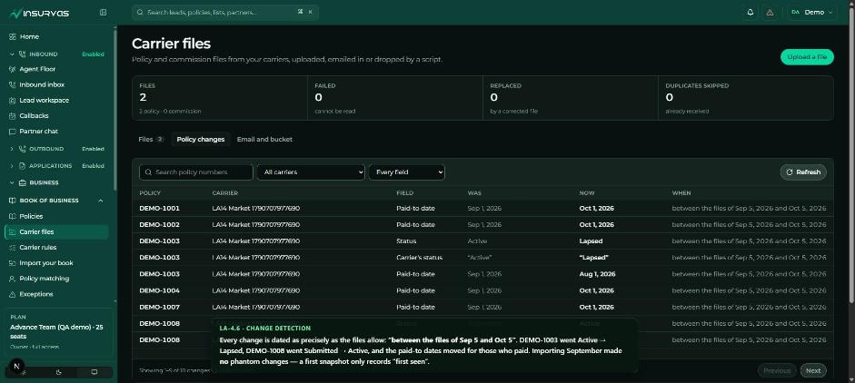
12 Each change dated between the two files.The current-state table and derived fields
Say
Behind every board is one row per policy with its latest state, recomputed every day even when no file arrives.
Days past due count from the paid-to date, never from the file's date. That keeps the countdown right on a monthly feed.
Days until the carrier closes the policy come from the carrier rule. With no rule there is no countdown. A wrong countdown is worse than none.
If the carrier still says Active but the client is past the grace period, we mark it at risk. It reads exactly the same as when the carrier says it.
The risk level comes only from what we've observed. It's not a prediction.
Do
- Point at the premium tile: $377 · 2 policies at risk.
- Name them: DEMO-1005 and DEMO-1006 missed October. They are 6 days past due, past the 3-day grace, with 24 days left to save them.
- Add that DEMO-1003 shows lapsed on 5 October, read from the change log.
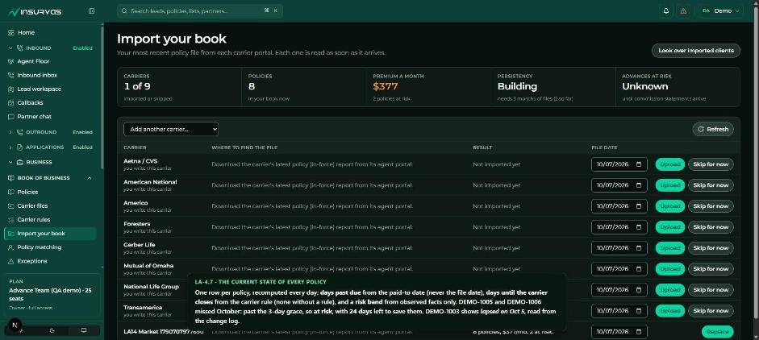
17 Two policies at risk, derived from the paid-to date and the carrier rule.Carrier rules and save windows
Say
This is where each carrier's numbers live: how long it gives to save a policy after a missed first payment, a missed later payment, a reinstatement, and so on.
Nothing is hard-coded. A carrier with no rule shows Not set, and its policies get no countdown at all rather than a guessed one.
A rule applies from a date and is never edited; a change is a new rule. So a past countdown keeps the rule it used.
Every rule says where it came from, and an unverified one is shown as unverified. An agency's own rule overrides the platform's.
Do
- Find LA14 Market: every window Not set, 7 in force.
- Edit → Ongoing payment: window 30, grace 3, source Observed, note "Demo rule" → Save rule.
- The row now reads 30 days · yours · unverified, and Missing drops from 5 to 4.
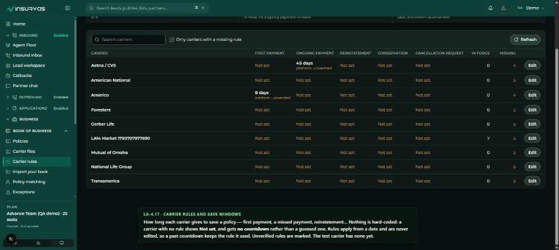
13 No rule yet, so no countdown.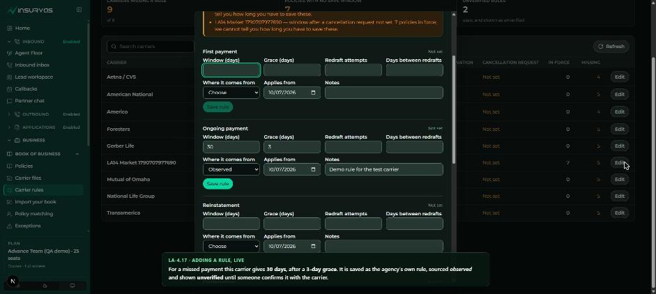
14 Adding the rule: 30 days after a 3-day grace.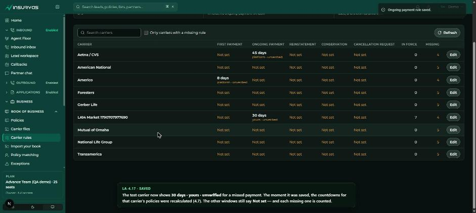
15 Saved as the agency's own rule, unverified.Policy ↔ client matching
Say
Every carrier policy is linked to a client, cheapest step first. If we already hold its policy number, from a submission or an issued policy, it links straight away. Otherwise the closest clients are scored and a person picks one.
No single field decides. A matching name alone is never enough.
Every link records how it was made, and a wrong link is corrected by a new one. The old one stays readable, so a mistake can always be traced.
Agent codes are mapped exactly as the carrier writes them, once. We never match a similar-looking name, because that can assign a policy and its commission to the wrong producer.
Do
- Links: 8 links, each made by the import with a provisional client.
- Agent codes: "DEMO/ AGENT ONE" and "DEMO/ AGENT TWO" are unmapped. Map DEMO/ AGENT ONE → Devin Okafor → Map.
- It moves to the mapped list; Agent codes unmapped drops from 2 to 1.
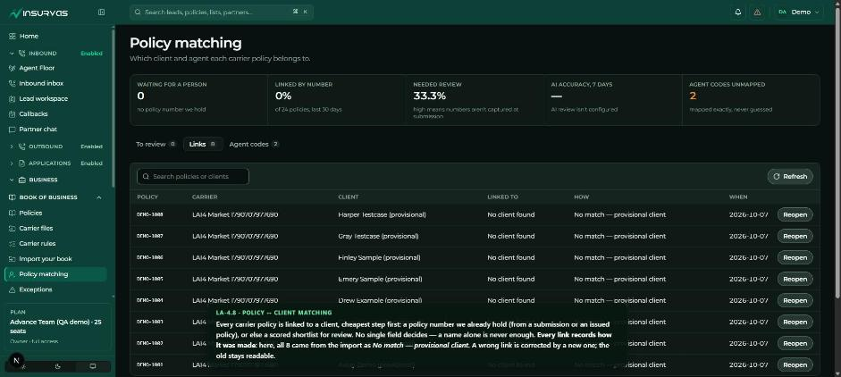
18 Every link says how it was made.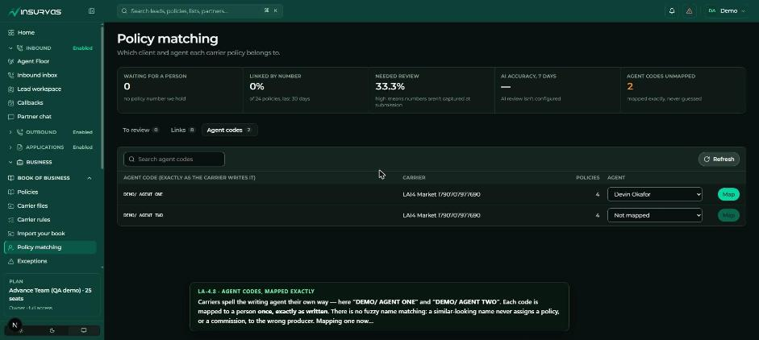
19 Choosing who "DEMO/ AGENT ONE" is.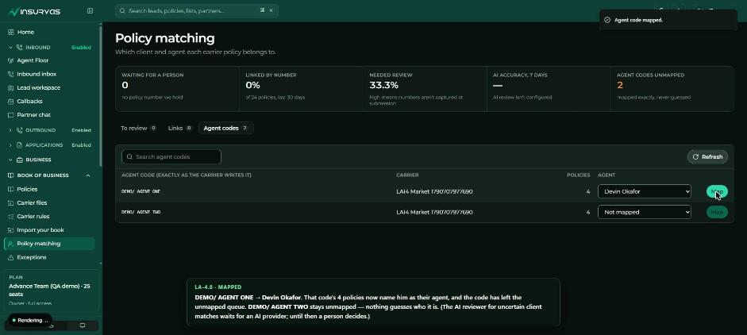
20 Mapped.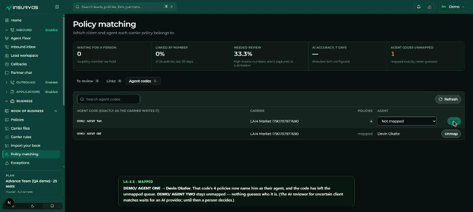
21 One left unmapped; nothing guesses it.The three exception queues and role-based ownership
Say
Three things go wrong between carrier files and sales: a policy with no sale on record, a sale no carrier has heard of, and two clients who might be one person.
The valuable one is the sale no carrier has heard of. It means the application may never have been submitted. It's raised five days after the sale, once we have that carrier's later file, and it escalates at ten.
Every item has an owner and an age, and the age is the first thing you see. If a role has nobody in it, the item goes to the owner. Nothing is ever unowned.
A client built from a carrier's file is marked Provisional everywhere until the agent confirms it. Two people at one address are two clients in one household, never merged.
Do
- Exceptions: one item, owned by the agency owner, aged today: "8 policies imported, 8 provisional clients created — review when you have time."
- Contact directory: every demo client has a Provisional badge. Casey and Drew Example share the household Example, FL.
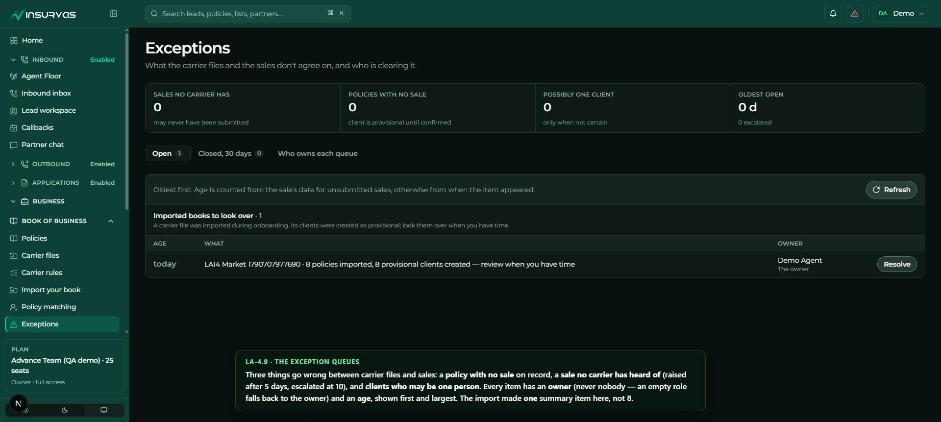
22 One summary item for the whole import.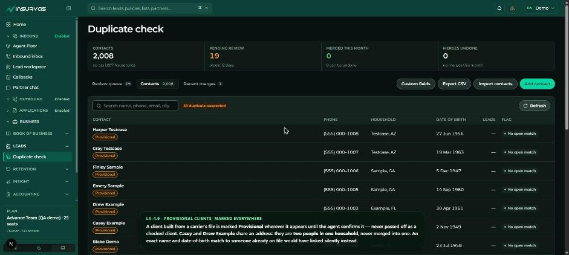
24 Provisional clients, and two people in one household.Existing-book import
Say
A new agency uploads its latest policy file from each carrier portal, and its book is there on day one. It goes through the same pipeline as every other file. There's no separate importer.
One row per carrier: where that portal keeps the file, the result the moment it's read, and Skip for now, which can be undone.
An imported book doesn't flood the queues. Every client is created as provisional, and the file gets one summary item instead of one per client.
We're honest about the limits. Persistency says Building until there are three months of files. Advances at risk said Unknown until the first commission statement arrived; now it's the unearned advance from the ledger, $1,281.78. Showing zero before would have wrongly said nothing was at risk.
Do
- Add another carrier… → LA14 Market. It gets its own row.
- Set its file date to 5 September, then drop the September file on the row (or press Upload).
- Watch the Result column: "8 policies, $377/mo. 0 at risk."
- Scroll up to the tiles: 1 of 9 carriers · 8 policies · $377 · Persistency Building · Advances at risk $1,281.78 (Unknown in shot 09, before the statement arrived).
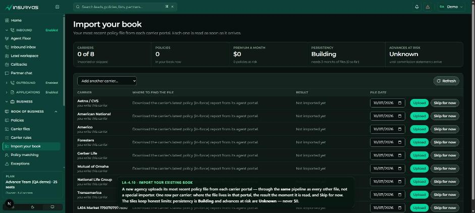
05 The carriers the agency writes, plus the test carrier.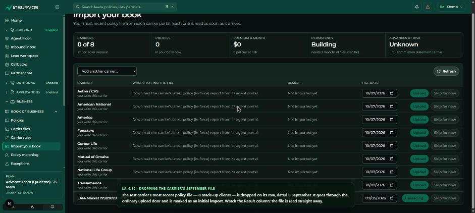
06 Dropped on its row, dated 5 September.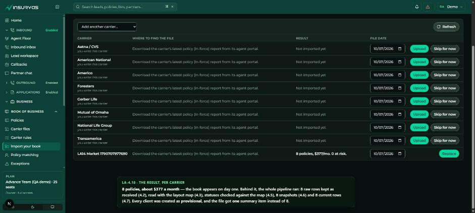
08 The result, right on the row.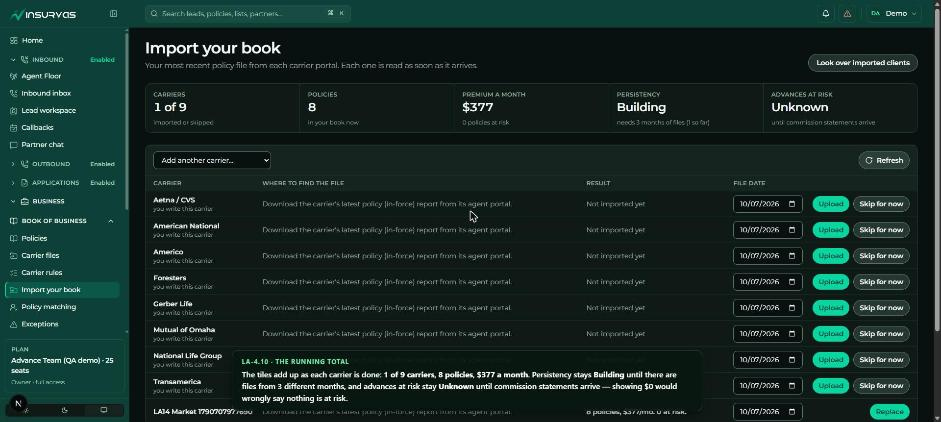
09 The running total; persistency Building, advances Unknown.The live upload: one file, every stage
demo-la14-live-update.csvSay
This is next month's policy file. In it, Emery Sample on DEMO-1005 has paid.
The moment it lands, one run takes it through every stage: collect, ingest, parse, store, match, reconcile, then the day is analysed. Each stage is recorded, with its timing.
Watch three things change on their own: at risk drops from two to one, the payment shows in the policy's history, and the voicemail we logged on that policy is marked saved, because the file says so.
Do
- Upload a file → LA14 Market · Policy file · dated today →
demo-la14-live-update.csv. - Runs tab: the new run, every stage green, a few seconds.
- Import your book: at risk reads 1.
- Lapse risk: DEMO-1005 has left the call list. The save rate reads 100% (1 of 1).
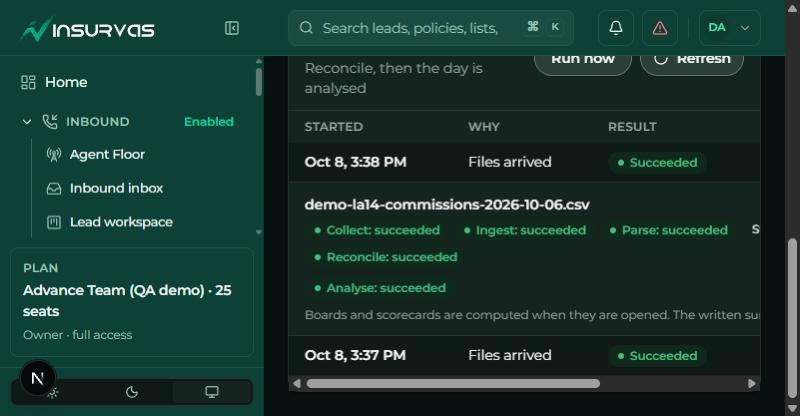
26 A run, stage by stage (the 8 October commission file).The policy list and the policy page
Say
Every policy in the carriers' files, as of the latest file: product, premium, status, how late, risk and agent.
Open one and it's all in one place: the timeline from the sale through every file, the money, what the commission should be, and where each value came from.
Blake Demo's advance came in at $400 on the October statement. $177.78 of it is still unearned, so it's what the carrier would take back if the policy lapsed today.
Do
- Source: From carrier files. Policies: 8 policies, $4,520 a year, at risk (2 before the live upload, 1 after), product FE Level.
- Open DEMO-1002. Timeline: the advance (row 3), the payments, the product change.
- Money: advance $400.00, still at risk $177.78.
- Expected first-year commission: $621.00 · $465.75 as an advance.
- Open Source: each field names the file and row it's read from.
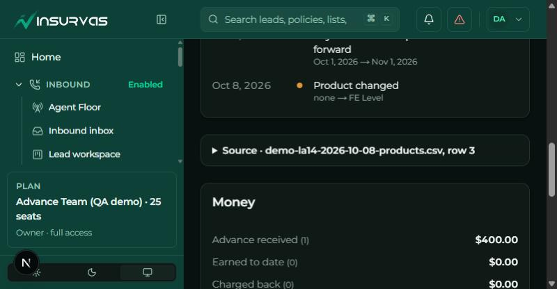
29 The timeline, the Source block and the money.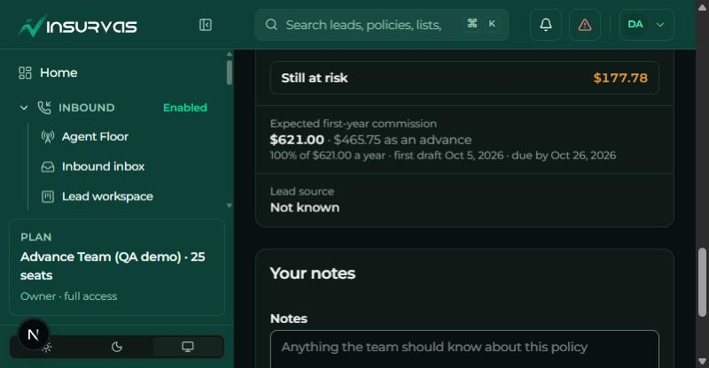
30 Still at risk, and what the carrier should pay.Traceability: follow a number down to the file
Say
Every number opens what's behind it, all the way down to the exact line of the exact file the carrier sent.
This row is every column as the carrier sent it, what our layout made of each one, and the value we stored. 400.00 became 40,000 cents. Read with version 1 of the commission layout.
And the original file is one click away: a sixty-second link, owner and bookkeeper only, and every download is logged.
A discrepancy we can't trace both ways is never shown. A daily check counts any figure that doesn't trace, and the build fails if a new screen adds one.
Do
- From the advance's row 3 link → the raw row.
- The whole file → every row and what it became.
- Download the original.
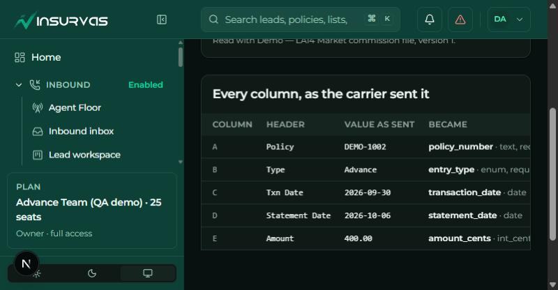
28 One row: every column, what it became.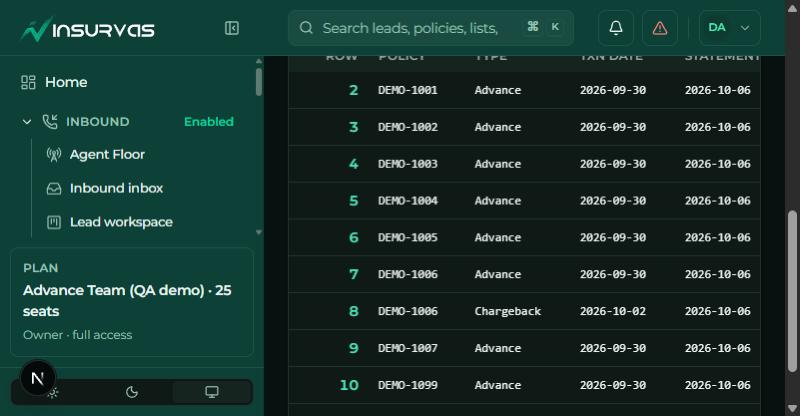
27 The whole file, row by row.The commission ledger
Say
Every line of every commission file: advances, earnings, chargebacks, fees and what's held. Each one keeps the file and row it came from.
A line is never edited. If the carrier corrects one, we record a reversal and the new line, so the history adds up.
Amounts are whole cents throughout. No rounding drift, ever.
A carrier that sends no file? Import its statement by hand, from the button at the top. Those lines join this same list, and the Source filter tells them apart.
Do
- Source: From carrier files. Tiles: advanced $3,302, charged back −$266, net received $3,032 after the $5 fee. The tiles follow the filter.
- The 10 lines, each with its file and row. DEMO-1099 is marked Policy not seen yet.
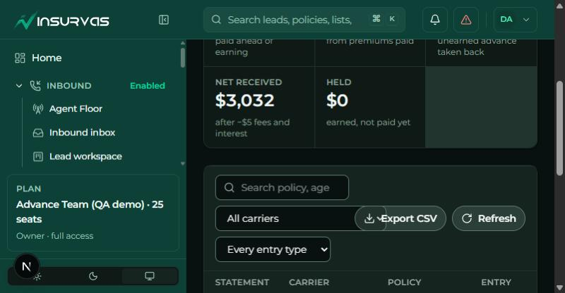
31 Net received after fees and chargebacks.Carrier accounts and orphan commission
Say
Each statement's opening balance, activity and closing balance, checked: does it add up, does it match its lines, and is a statement missing?
A statement that doesn't add up is flagged, and its lines are held out of every total until it's corrected.
Commission for a policy no file has shown yet is normal while the files catch up. It joins its policy the moment the policy arrives, and only goes to Exceptions after sixty days.
Do
- The Oct 6 statement: $0.00 → $3,031.85, Adds up.
- Unattributed commission: $300.00 on 1 policy (DEMO-1099).
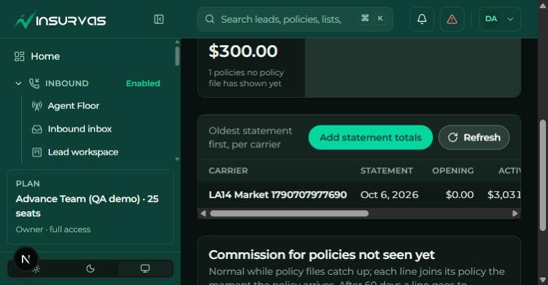
32 A statement that adds up, and one orphan line.Expected commission and the rate card
Say
Your contract level and your rates per carrier and product, so every payment can be checked against what it should have been.
Once a policy reaches the carrier's pay trigger, on issue or on the first draft, its expected figure is written. That figure never changes later; rates only go forward.
The carrier's own product code, FE Level here, is mapped to our product family once.
Rates and advance rules live here, in one place, beside the policies they price.
Do
- Tiles: 1 of 1 carrier covered, 100% of premium, $4,520 expected over 8 priced policies.
- LA14 Market: pays on the first draft, usually within 21 days, at 100% of premium. The other carriers you are contracted with are listed too, as No policies yet.
- Edit on LA14: the product mapping (FE Level → Final Expense), the rate, and the advance rule: 9 months at 75%, 12-month prorated clawback. Close without saving.
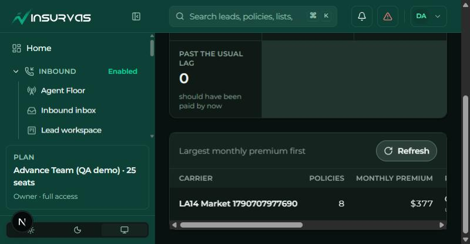
33 The whole book can be checked.Discrepancies and dispute letters
Say
Expected against paid, policy by policy. Blake Demo's advance should have been $465.75; $400 came in. That's $65.75 short, beyond the one-dollar tolerance.
And money that's coming back: DEMO-1003 lapsed three months into a nine-month clawback, so $233.40 of its advance is expected back. Don't spend it.
Every item shows the figures and the ledger line behind them, so you can check it before you claim it.
The letter is drafted from the records, figure for figure. We never send it. You send it, then record what happened.
Do
- Source: From carrier files. 2 open. "You appear to be owed" $65.75 (DEMO-1002, paid short); Coming back $233.40 (DEMO-1003, chargeback coming).
- Why: the explanation, and the line's file and row.
- Tick it → Draft letter: the preview. Close it without saving.
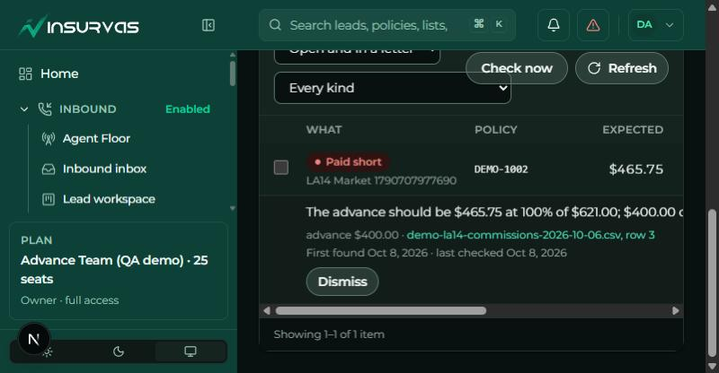
34 Paid short, with the line behind it.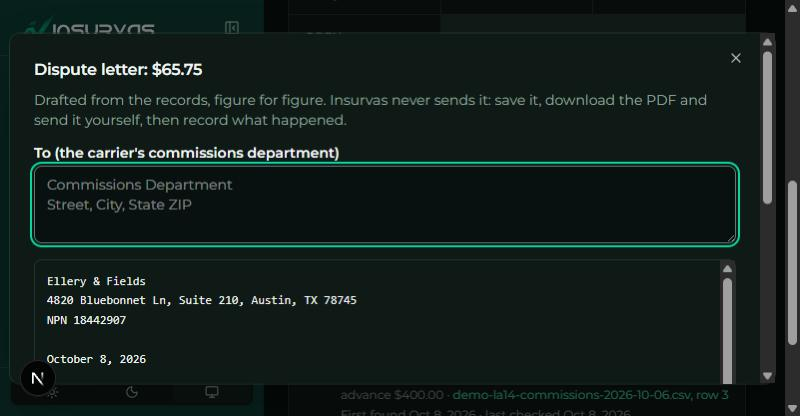
35 The dispute letter preview.The retention call list
Say
Who to call today to keep a policy alive: the soonest deadline first, then the most money.
Every reason and every countdown comes from the carrier's files and rules. Nothing here is a prediction.
A logged call is checked against the next file: saved if the paid-to date moved, lost if the policy lapsed. That gives a save rate by reason, carrier and agent, from the files, not from opinion.
Do
- Before the live upload: DEMO-1005, advance at risk $305.00, last contact "Left voicemail · still at risk"; DEMO-1006, $0.00 (already charged back). On Policies, both read Critical: at risk inside the clawback window.
- After it: DEMO-1005 has gone, and the save rate reads 100%.
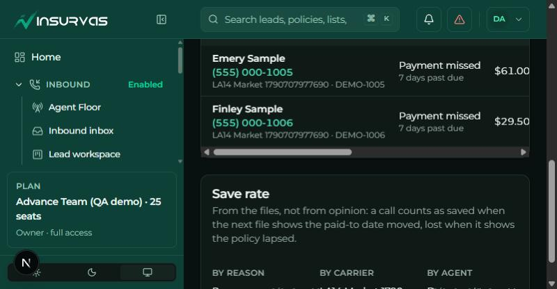
36 The call list, and the save rate under it.Book scorecards
Say
Persistency, placement, chargebacks and net commission, all computed live from the files. Click any number and you get the rows behind it.
Persistency says Building, on purpose. It only counts policies issued since your first file. Older ones were only seen if they survived, which would flatter the number.
Today's summary states only figures it was given, and it says so when nothing happened.
Do
- Today: "1 chargeback was recorded, $265.50 in all".
- Net commission, week of Oct 5: $3,031.85, matching the statement.
- Click a figure to open its rows. Scorecards tab: by lead source, carrier, product, agent.
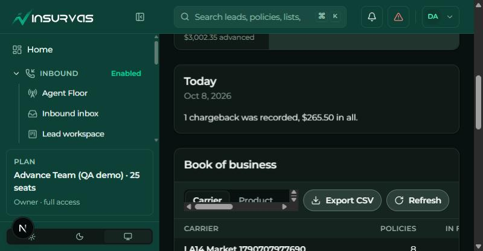
37 Today's summary, from the day's own figures.Runs and agent findings
Say
Every run is recorded, stage by stage. If one stops, everything before it stays, and the next run picks up from the last completed stage. Running twice never doubles anything.
Agents note what they see: a missing or late file, an unknown column, a status nobody has mapped. A person marks each finding right or wrong, and that's each agent's accuracy, week by week.
The AI agents propose, people approve, and nothing private reaches a model. They switch on once an AI provider is chosen.
Do
- Runs: the 8 October runs and the live one.
- Agent findings: switch the filter to Any status (nothing is open on the demo agency).
Closing and reset
Say
Done and live: every task from 4.1 to 4.20 except 4.4.
Waiting on an AI provider: 4.4's PDF extraction, the AI matching review, the written daily summary, and the AI agents. The real carrier files will fill the layout and status maps.
After the demo
- Turn LA14 Market off again, and the Lapse risk switch if it shouldn't stay on for every agency.
- The run left on the demo agency: three test files and their snapshots, 8 provisional clients and their links, the demo layout map, one carrier rule, one agent mapping, and the open import summary.
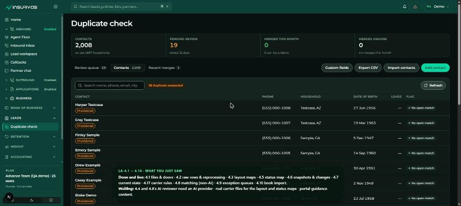
25 The closing caption.All 37 screenshots
In the order they were taken. The files are also in docs/la4/demo/shots/ in the repository.
| # | Task | File | What it shows |
|---|---|---|---|
| 01 | 4.1 | 01-4.1-carrier-files-empty.jpg | The registry before any file |
| 02 | 4.1 | 02-4.1-email-and-bucket.jpg | Email and bucket doors |
| 03 | 4.3 · 4.4 | 03-4.3-layout-maps.jpg | Layout maps library, empty |
| 04 | 4.5 | 04-4.5-status-maps.jpg | Words waiting, and the approved map |
| 05 | 4.10 | 05-4.10-import-carrier-added.jpg | Import screen, test carrier added |
| 06 | 4.10 | 06-4.10-import-uploading.jpg | September file uploading |
| 07 | 4.10 | 07-outtake-stale-result-bug.jpg | "No policies yet" while matching ran outtake · fixed |
| 08 | 4.10 | 08-4.10-import-result.jpg | 8 policies, $377/mo |
| 09 | 4.10 | 09-4.10-import-totals.jpg | Running total and honest limits |
| 10 | 4.2 | 10-4.2-file-registered.jpg | The file in the registry, map v1 |
| 11 | 4.6 | 11-4.6-two-files.jpg | September and October files |
| 12 | 4.6 | 12-4.6-policy-changes.jpg | Changes between Sep 5 and Oct 5 |
| 13 | 4.17 | 13-4.17-rules-not-set.jpg | Test carrier, every window Not set |
| 14 | 4.17 | 14-4.17-adding-a-rule.jpg | Adding the 30-day rule |
| 15 | 4.17 | 15-4.17-rule-saved.jpg | 30 days · yours · unverified |
| 16 | 4.1 | 16-4.1-corrected-file-replaces.jpg | Corrected October file replaces the first |
| 17 | 4.7 | 17-4.7-two-at-risk.jpg | 2 policies at risk |
| 18 | 4.8 | 18-4.8-links.jpg | 8 links and how each was made |
| 19 | 4.8 | 19-4.8-agent-codes.jpg | Choosing who an agent code is |
| 20 | 4.8 | 20-4.8-agent-mapped.jpg | Agent code mapped |
| 21 | 4.8 | 21-4.8-agent-moved-to-mapped.jpg | One mapped, one left unmapped |
| 22 | 4.9 | 22-4.9-exceptions-summary.jpg | One summary item for the import |
| 23 | 4.9 | 23-outtake-search-dropdown.jpg | Search typed into the wrong box outtake |
| 24 | 4.9 | 24-4.9-provisional-clients.jpg | Provisional badges; one household |
| 25 | End | 25-closing-summary.jpg | The closing caption |
| 26 | 4.19 | 26-4.19-run-stages.jpg | A run, stage by stage |
| 27 | 4.20 | 27-4.20-file-rows.jpg | A commission file, row by row |
| 28 | 4.20 | 28-4.20-raw-row.jpg | One raw row and what it became |
| 29 | 4.11 · 4.12 | 29-4.12-policy-money.jpg | DEMO-1002: timeline, Source, money |
| 30 | 4.13 | 30-4.13-expected-on-policy.jpg | Still at risk; expected commission |
| 31 | 4.12 | 31-4.12-ledger-totals.jpg | Ledger totals |
| 32 | 4.14 | 32-4.14-carrier-accounts.jpg | A statement that adds up; one orphan |
| 33 | 4.13 | 33-4.13-rate-card.jpg | Rate card coverage |
| 34 | 4.15 | 34-4.15-discrepancy-why.jpg | Paid short, with its ledger line |
| 35 | 4.15 | 35-4.15-letter-preview.jpg | Dispute letter preview |
| 36 | 4.16 | 36-4.16-call-list.jpg | The call list and save rate |
| 37 | 4.18 | 37-4.18-today-summary.jpg | Today's summary |